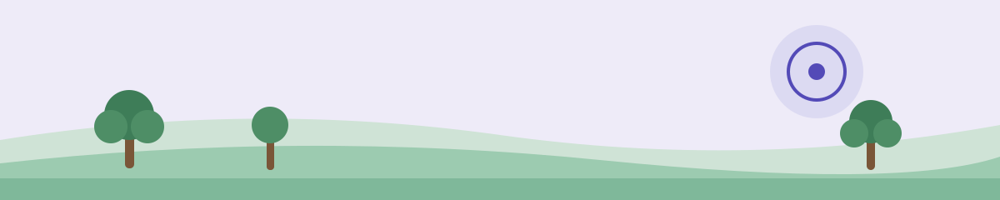

Campus map
1453 Mission Street, San Francisco — five floors, each with its own community and resources.

Floor by floor
Ground floor — entry, lounge & café
- Student & faculty loungeA welcoming common area to relax, meet, and debrief between classes.
- CIIS caféCoffee, tea, pastries, and light snacks on weekdays; hours vary by semester.
- Main lobby & receptionVisitor check-in, campus information, and mail/package receiving.
- Community bulletin boardAnnouncements, events, and ICP program updates.
Second floor — library & learning
- CIIS LibraryPhysical collections, a staffed reference desk, and quiet study areas.
- Computer workstationsAccess to all CIIS databases, plus printing and scanning.
- Course reservesRequired readings placed on reserve by faculty — submit requests three weeks ahead.
Third floor — gathering & nourishment
- Namaste HallThe primary large event and gathering space for assemblies, lectures, and somatic workshops.
- Student cafeteriaTables, microwaves, a refrigerator, and vending machines.
- Meditation & practice roomA quiet space for mindfulness and brief somatic practice.
Fourth floor — faculty space
- Faculty loungeSeating, a small kitchen with coffee and tea, workstations, and a printer.
- RestroomsAccessible, all-gender restrooms.
- Faculty mailboxesAsk the program coordinator about mailbox access for adjunct instructors.
- Faculty meeting roomA small conference room for consultation and student meetings — reserve through the coordinator.
Fifth floor — administration
- Human resourcesContracts, payroll setup, direct deposit, and benefits. Monday–Friday, 9am–5pm.
- Operations & facilitiesRoom reservations, facilities requests, and maintenance.
- Finance & business officeInstitutional finances and expense reimbursements.
- Academic affairs / provost's officeAcademic policy, faculty governance, and curriculum.
Food and coffee near campus
A few nearby options around 1453 Mission St, in the Civic Center / SoMa area. Hours and addresses change — verify current details on Google Maps before you go.
Coffee & cafés
Sightglass Coffee
270 7th St (at Folsom), about an 8-minute walk. SF roaster with pour-overs and pastries.
Blue Bottle Coffee
66 Mint Plaza (off 5th & Mission), about a 12-minute walk. Specialty espresso and drip.
Lunch & dinner
Tu Lan
8 Sixth St, about a 10-minute walk. Historic, no-frills Vietnamese spot.
Zuni Café
1658 Market St, about a 9-minute walk. San Francisco classic — roast chicken and Caesar salad.
Poke Bar
A short walk from campus. Build-your-own poke bowls.
Moya
A short walk from campus. Ethiopian dishes and injera.
Rad Radish
A short walk from campus. Plant-based comfort food and bowls.
Jay's Grill
A short walk from campus. Casual grill and quick bites.
Heart of the City Farmers Market
UN Plaza (Market & 7th), about a 7-minute walk. Local produce and prepared food on Wednesdays and Sundays.
Little Gem
400 Grove St (Hayes Valley), about a 10-minute walk. Bright, health-minded bowls and salads.
Facilities contact
Facilities & building operations
FacilitiesandBusinessOps@ciis.edu
For building access, room setup, furniture, supplies, or equipment requests.